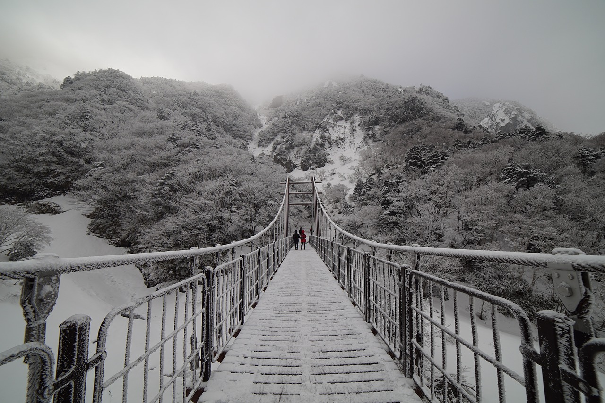

건강한 삶을 위한 기본지식 창고
건강한 삶을 위한 기본지식 창고 지비츠,문구류는 바로여기
지비츠,문구류는 바로여기
한라산(漢拏山)은 대한민국 제주도 중앙앙부에 있는 해발 1,947.06m, 면적 약 1,820km2의 화산으로, 제주도의 면적 대부분을 차지하고 있다. 정상에 백록담(白鹿潭)이라는 화산호가 있는데, 백록담이라는 이름은 흰 사슴이 물을 먹는 곳이라는 뜻에서 왔다고 전해진다. 산자락 곳곳에 오름 또는 악(岳)이라 부르는 다양한 크기의 측화산들이 분포해 있는 것이 큰 특징이다. 일반적으로 한라산은 폭발 가능성이 없는 사화산으로 알려져 왔지만 다시 폭발할 수도 있는 활화산일 가능성도 제기되었다. 한국에서는 금강산, 지리산과 함께 삼신산(三神山)이라 불려왔다. 한라산 일대는 천연보호구역으로서 천연기념물 제182호로 지정되어 있고, 1970년 3월 24일에 국립공원으로 지정되었다. 2007년 6월 27일 오후(대한민국 표준시) 유네스코 제31차 세계유산위원회 총회에서 제주 화산섬과 용암 동굴의 일부로 유네스코 세계자연유산으로 등록되었다.
